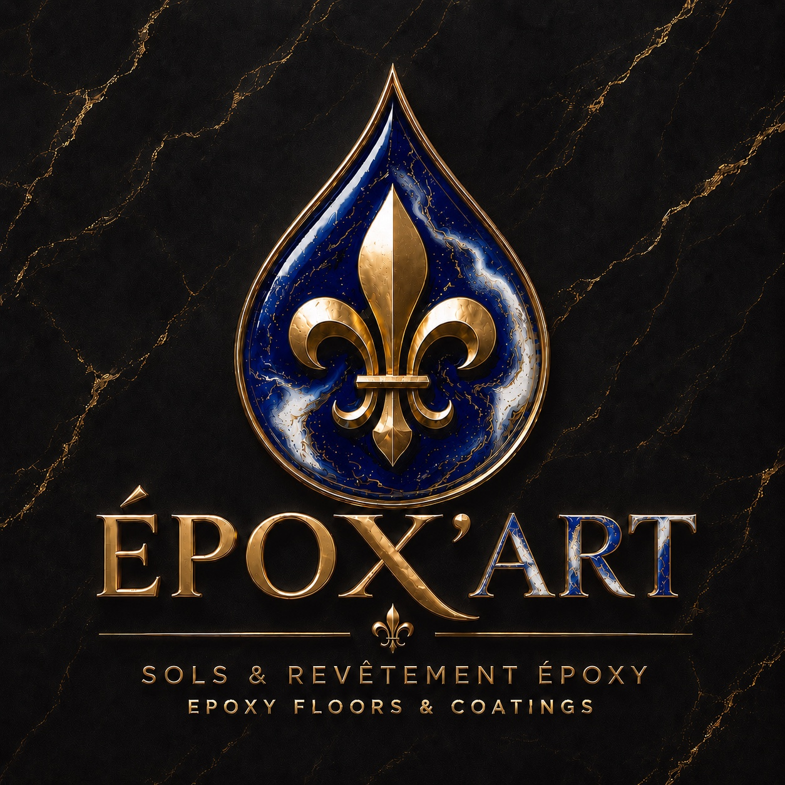

Garage résidentiel
Une surface propre, lumineuse et résistante au sel, aux pneus et aux produits courants.
Le plus populaire
ÉPOX’ARTRevêtements d’époxy haut de gamme, préparation mécanique du béton et finition durable conçue pour le climat québécois.
Chaque surface est inspectée, préparée et protégée selon son usage réel.
Une surface propre, lumineuse et résistante au sel, aux pneus et aux produits courants.
Le plus populaireUne finition facile à entretenir qui modernise instantanément les espaces utilitaires.
DurableRevêtement uniforme et professionnel pour boutiques, salles d’exposition et zones de travail.
Sur mesureCes rendus visuels servent d’inspiration jusqu’à l’ajout de vos premières réalisations réelles.
Les photos de projets terminés remplaceront progressivement ces aperçus. Aucun faux témoignage ni faux projet n’est présenté.
Mesure, état du béton, fissures, contaminants et vérification de l’humidité.
Meulage diamant avec aspiration afin d’obtenir un profil propre et adhérent.
Correction des fissures et imperfections mineures avant l’application.
Primaire au besoin, couche de base époxy, flocons décoratifs et finition protectrice.
Inspection des bordures, de l’uniformité et remise des consignes de cure et d’entretien.
Obtenez une fourchette indicative de main-d’œuvre. Le prix final dépend de l’état du béton, des réparations, de l’humidité et du système choisi. Les matériaux sont évalués séparément.
La marche légère est souvent possible après environ 24 heures, mais le délai exact dépend du système, de la température et de l’humidité.
Généralement entre 3 et 7 jours selon le produit utilisé et les conditions de cure. Les consignes exactes sont remises à la fin du chantier.
Un test peut être recommandé. Lorsqu’un problème d’humidité est détecté, une barrière adaptée peut être nécessaire avant le système époxy.
La préparation du béton, les réparations mineures, le meulage diamant, l’application du système choisi et le nettoyage du chantier. Les matériaux et réparations majeures sont évalués séparément.
Envoyez les dimensions, la ville et quelques photos du béton pour recevoir une première évaluation.
438 885-9313